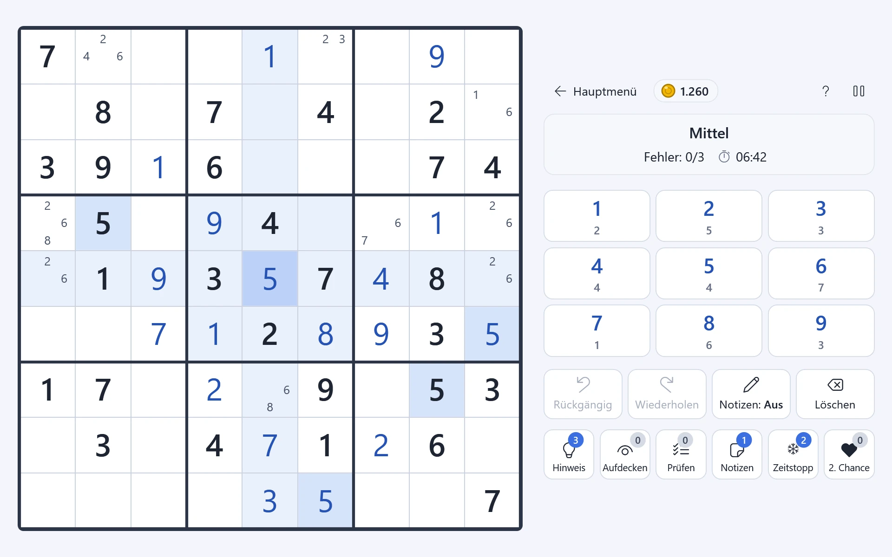
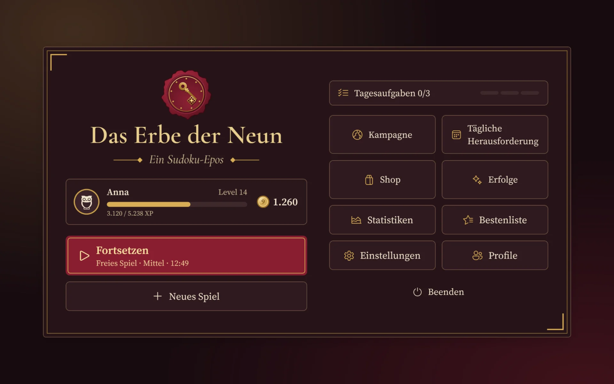
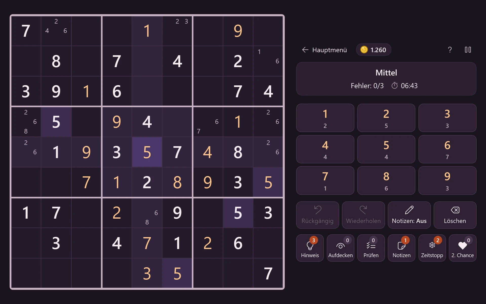
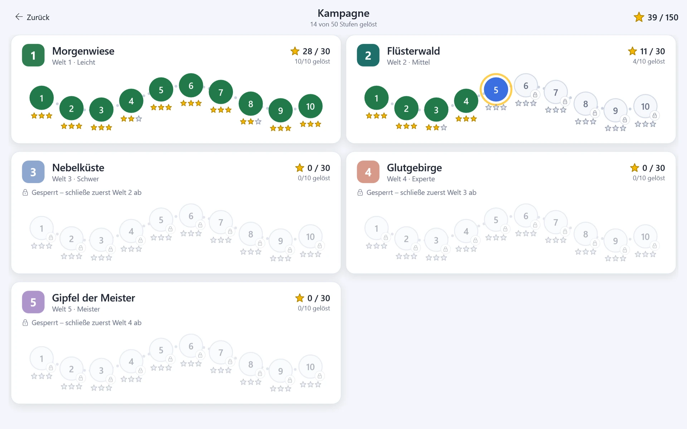
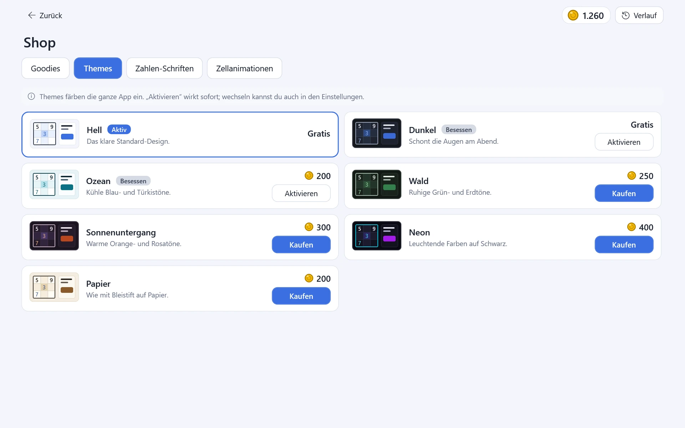

So sieht das Spiel aus
Klicke auf ein Bild, um es groß zu sehen.










So installierst du das Spiel
Drei Schritte, ganz ohne Fachwissen.
-
Herunterladen
Klicke oben auf „Für Windows herunterladen“. Die Datei ErbeDerNeun-win-Setup.exe landet in deinem Ordner Downloads.
-
Datei öffnen
Öffne die heruntergeladene Datei mit einem Doppelklick (oder im Browser unter „Downloads“ auf „Datei öffnen“).
Keine Sorge, wenn ein blaues Fenster erscheint. Windows kennt den Herausgeber dieses kleinen Hobby-Spiels noch nicht und warnt deshalb vorsichtshalber. Das ist bei Programmen ohne teures Zertifikat ganz normal.
Klicke zuerst auf „Weitere Informationen“ und dann auf „Trotzdem ausführen“.
Vereinfachte Skizze – das echte Fenster sieht ähnlich aus. -
Spielen
Die Installation läuft von selbst, ohne weitere Fragen. Danach startet das Spiel sofort. Später findest du es über die Verknüpfung „Das Erbe der Neun“ auf dem Desktop oder im Startmenü.
Updates kommen automatisch: Gibt es eine neue Version, zeigt das Spiel im Hauptmenü einen Hinweis. Ein Klick auf „Jetzt aktualisieren“ genügt – deine Spielstände bleiben erhalten.
Was das Spiel kann
-
5 Schwierigkeitsstufen
Von Leicht bis Meister – bewertet nach echten Lösungstechniken, nicht nach der Zahl der Vorgaben.
-
Kampagne mit 50 Stufen
Fünf Welten mit je zehn Rätseln. Für jede Stufe gibt es bis zu drei Sterne.
-
Tägliche Herausforderung
Jeden Tag ein neues Rätsel. Verpasste Tage des Monats lassen sich nachholen.
-
Münzen, Shop und Goodies
Gelöste Rätsel bringen Münzen – zum Beispiel für Hinweise mit Erklärung oder einen Zeitstopp.
-
27 Erfolge
Kleine Ziele in neun Bereichen – vom ersten gelösten Rätsel bis zur langen Siegesserie.
-
Mehrere Profile und Bestenliste
Die ganze Familie spielt an einem Computer – jeder mit eigenem Spielstand. Wer ist am schnellsten?
-
7 Farbthemen
Hell, Dunkel, Ozean, Wald, Sonnenuntergang, Neon und Papier – dazu verschiedene Zahlen-Schriften.
-
Offline spielbar
Kein Konto, keine Anmeldung. Internet braucht das Spiel nur, um nach Updates zu schauen.
Die Geschichte hinter dem Namen
Dieses Spiel ist ein Geschenk – gebaut von einem Sohn für seinen Vater.
In einem Sudoku dreht sich alles um die Neun: neun Ziffern, neun Felder in jedem Block, neun Blöcke auf dem Brett. Und ein Erbe ist etwas, das man nicht für sich behält, sondern weitergibt. So kam Das Erbe der Neun zu seinem Namen.
Neu in dieser Version
Was sich in der neuesten Version geändert hat, steht auf der GitHub-Seite des Spiels.
Häufige Fragen
Kostet das etwas?
Nein. Das Erbe der Neun ist komplett kostenlos – ohne Werbung, ohne Abo und ohne Käufe mit echtem Geld. Die Münzen im Spiel verdienst du nur durch Rätseln.
Brauche ich Internet?
Nur zum Herunterladen. Spielen kannst du danach jederzeit ohne Internet. Ist eine Verbindung da, schaut das Spiel kurz nach dem Start, ob es eine neue Version gibt.
Wie bekomme ich Updates?
Automatisch: Gibt es eine neue Version, erscheint im Hauptmenü ein Hinweis. Klicke auf „Jetzt aktualisieren“ – das Spiel lädt das Update, startet neu, und fertig. Du musst die Datei von dieser Seite nicht noch einmal herunterladen.
Wo sind meine Spielstände?
Im Ordner %APPDATA%\ErbeDerNeun. Du erreichst ihn, wenn du diesen Text in die Adresszeile des Explorers eingibst. Die Spielstände bleiben auch dann erhalten, wenn du das Spiel deinstallierst – nach einer neuen Installation ist alles wieder da.
Früher hieß das Spiel „SudokuQuest“. Wer es schon gespielt hat, muss nichts tun: Beim ersten Start werden die Spielstände aus %APPDATA%\SudokuQuest automatisch übernommen. Der alte Ordner bleibt zur Sicherheit erhalten.
Wie deinstalliere ich das Spiel?
Öffne die Windows-Einstellungen → Apps (bzw. „Installierte Apps“), suche Das Erbe der Neun und wähle Deinstallieren. Deine Spielstände bleiben dabei erhalten.
Etwas funktioniert nicht?
Im Spiel unter Einstellungen → Hilfe und Info gibt es den Knopf „Fehlerbericht erstellen“. Er legt eine ZIP-Datei auf deinem Desktop ab. Schicke diese Datei einfach an den Entwickler – es wird nichts automatisch verschickt.